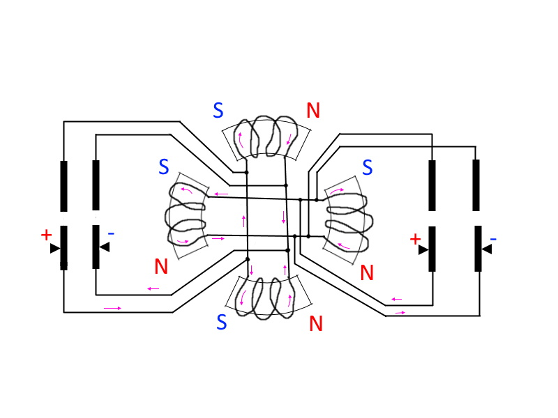
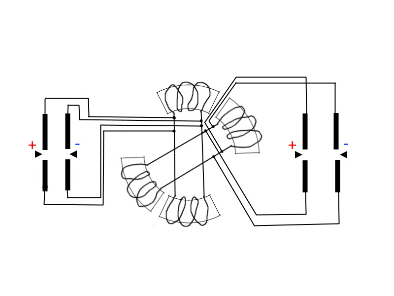
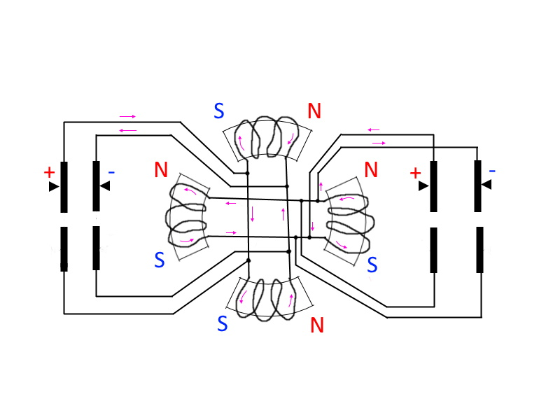

Сердечники роторов одной стороной притягиваются друг к другу, а другой стороной отталкиваются. При максимальном сближении происходит переключение направления тока
одного из роторов и процесс повторяется. Положение максимального сближения сердечников соответсвует положению ЗКВ при котором угловые скорости роторов равны.
При необходимости возможно применить центробежное охлаждение. Для старта двигателя из положения когда щетки оказались в зоне где контакт с кольцами прерывается возможно
использовать механизм "проскальзывания" щеток по коллектору на небольшой промежуток. В таком двигателе нет тяжелого статора. Все "железо" и обмотки в нем работает
практически постоянно (с перерывом на переключение контактов). Если применить электронное управление питанием (прерывание и переключение направления тока) то
можно сделать кольца гладкими (без разрывов) и упростить внутреннюю коммутацию обмоток.